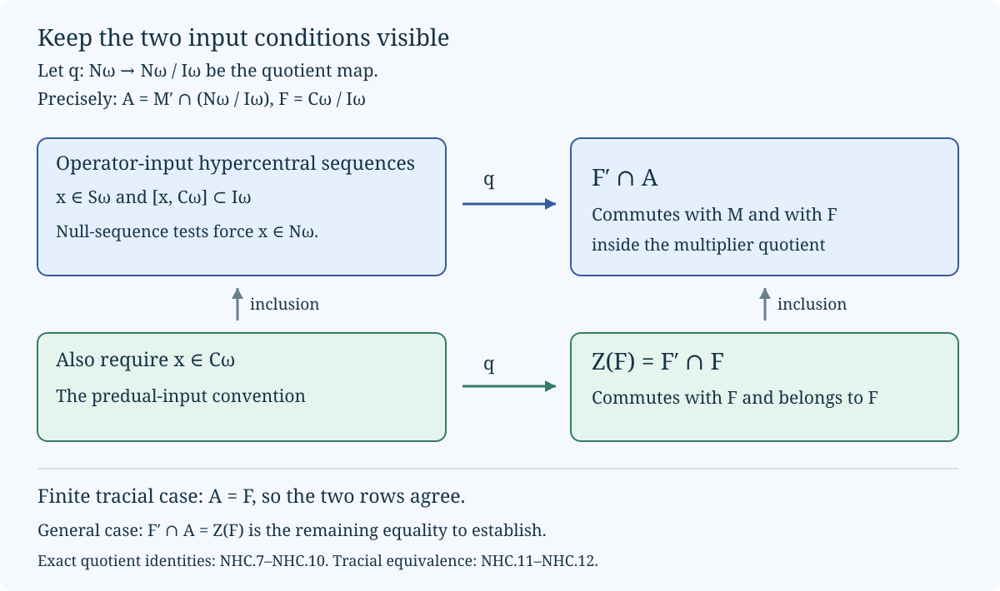

Null sequences and hypercentral commutants
Original exposition by OpenAI Codex, GPT-6 Astra, Ultra. New text and figure: CC0-1.0.
There are two commutation conditions for a bounded sequence in a von Neumann algebra. One tests fixed operators in the strong* topology; the other tests normal functionals in their norm. We keep these conditions distinct and determine exactly what an additional hypercentrality test gives. The finite tracial case admits a direct equivalence proof. A weighted tensor product shows why its proof cannot be transferred to a general state by changing notation.
Let \(M\) have a faithful normal state, let \(\omega\) be a free ultrafilter, and write \(\mathcal L=\ell^\infty(\mathbb N,M)\). Strong* limits below are along \(\omega\). We use the proved normal-predual duality and Hahn–Banach argument from Concrete preduals, the product construction in Infinite products and modular time, and the quotient conventions of Multiplier ultraproducts and normal embeddings. The normal-functional decomposition and faithful-state topology used below are proved in Central-sequence foundations, NT1–NT2. For modules our convention is
\[ (a\psi)(b)=\psi(ba),\qquad(\psi a)(b)=\psi(ab). \tag{NHC.1} \]Null sequences and the two commutation tests
Define
\[ \begin{aligned} I_\omega&=\{z\in\mathcal L:z_n\longrightarrow0\text{ strong*}\},\\ C_\omega&=\{x\in\mathcal L:\|x_n\psi-\psi x_n\|\longrightarrow0\quad(\psi\in M_*)\},\\ S_\omega&=\{x\in\mathcal L:[x_n,a]\longrightarrow0\text{ strong*}\quad(a\in M)\},\\ N_\omega&=\{x\in\mathcal L:xI_\omega\subset I_\omega,\ I_\omega x\subset I_\omega\}. \end{aligned} \tag{NHC.2} \]The letter \(S\) denotes the operator test, and \(C\) denotes the normal-functional test.
Lemma. \(I_\omega\subset C_\omega\subset S_\omega\cap N_\omega\).
Proof. For a positive normal functional \(\psi\), Cauchy–Schwarz gives
\[ \|z\psi\|\le\psi(1)^{1/2}\psi(z^*z)^{1/2},\qquad \|\psi z\|\le\psi(1)^{1/2}\psi(zz^*)^{1/2}. \tag{NHC.3} \]Both sides tend to zero for a strong*-null bounded sequence. Every normal functional is a linear combination of four positive normal functionals, by the normal-functional decomposition proved in the predual construction. Thus \(I_\omega\subset C_\omega\).
Take \(x\in C_\omega\), with \(\|x_n\|\le K\). For a fixed \(a\in M\), the module identities are
\[ \begin{aligned} [x_n,a]\psi&=[x_n,a\psi]-a[x_n,\psi],\\ \psi[x_n,a]&=[x_n,\psi a]-[x_n,\psi]a. \end{aligned} \tag{NHC.4} \]Every functional on the right is fixed before taking the limit. Consequently both left sides tend to zero in norm. With \(b_n=[x_n,a]\), the estimates
\[ \psi(b_n^*b_n)\le\|b_n\|\,\|b_n\psi\|,\qquad \psi(b_nb_n^*)\le\|b_n\|\,\|\psi b_n\| \]and \(\|b_n\|\le2K\|a\|\) give strong* convergence to zero. This proves \(C_\omega\subset S_\omega\).
For the multiplier assertion, let \(z\in I_\omega\), \(\|z_n\|\le L\), and let \(\psi\) be positive and normal. One square is immediately bounded by
\[ \psi((x_nz_n)^*(x_nz_n))\le K^2\psi(z_n^*z_n). \]For the other square, moving one \(x_n\) through the functional and applying Cauchy–Schwarz gives
\[ \begin{aligned} 0\le\psi(x_nz_nz_n^*x_n^*) &\le KL^2\|[x_n,\psi]\| +|\psi(z_nz_n^*x_n^*x_n)|\\ &\le KL^2\|[x_n,\psi]\| +LK^2\psi(1)^{1/2}\psi(z_nz_n^*)^{1/2}. \end{aligned} \tag{NHC.5} \]Indeed the difference in the first line is \((\psi x_n-x_n\psi)(z_nz_n^*x_n^*)\); also \((z_nz_n^*)^2\le L^2z_nz_n^*\) and \((x_n^*x_n)^2\le K^4 1\). Both terms vanish. Thus \(xz\in I_\omega\). The adjoint sequence \(x^*\) is again centralizing: for positive \(\psi\), its commutator has the same norm as that of \(x\), and the general case follows by decomposition. Apply the left-product result to \(x^*,z^*\), then take adjoints, to obtain \(zx\in I_\omega\). Hence \(x\in N_\omega\). \(\square\)
These computations also justify the algebraic quotients used below. The module product identity makes \(C_\omega\) a norm-closed star algebra. The two ideal-preservation conditions make \(N_\omega\) a unital norm-closed star algebra. Bounded strong*-null sequences form a norm-closed star algebra, and \(I_\omega\) is an ideal of both \(C_\omega\) and \(N_\omega\). Thus
\[ M_\omega=C_\omega/I_\omega\ \subset\ M^\omega=N_\omega/I_\omega \tag{NHC.6} \]is an injective inclusion of C* algebras. Constant sequences embed \(M\) in \(M^\omega\), and (NHC.4) shows that \(M_\omega\subset M'\cap M^\omega\). The earlier quotient construction proves their von Neumann algebra structure; the next argument only needs these quotients and their exact kernel.
The null-sequence test forces the multiplier condition
Lemma. For any bounded sequence \(x\), the following are equivalent:
\[ x\in N_\omega \quad\Longleftrightarrow\quad [x,z]\in I_\omega\quad\text{for every }z\in I_\omega. \tag{NHC.7} \]Proof. The forward implication is the definition of \(N_\omega\). For the converse, fix \(z\in I_\omega\). In a faithful normal representation, boundedness of \(x_n\) and strong convergence of \(z_n\) imply \(x_nz_n\to0\) strongly. Similarly \((z_nx_n)^*=x_n^*z_n^*\to0\) strongly. Put \(w_n=x_nz_n-z_nx_n\), which tends to zero strong* by assumption. The identity \(z_nx_n=x_nz_n-w_n\) supplies strong convergence of \(z_nx_n\). Taking adjoints in \(x_nz_n=z_nx_n+w_n\) supplies strong convergence of \((x_nz_n)^*\). Both products are therefore strong*-null. \(\square\)
Define the weaker-input hypercentral set by
\[ H_\omega^{\rm op} =\{x\in S_\omega:[x,y]\in I_\omega\text{ for every }y\in C_\omega\}, \qquad H_\omega^{\rm pre}=H_\omega^{\rm op}\cap C_\omega. \tag{NHC.8} \]Let \(q:N_\omega\to M^\omega\) denote the quotient map and put
\[ A=M'\cap M^\omega,\qquad F=M_\omega. \]Theorem. The first set in (NHC.8) is contained in \(N_\omega\), and
\[ q(H_\omega^{\rm op})=F'\cap A, \qquad q(H_\omega^{\rm pre})=Z(F). \tag{NHC.9} \]In particular, the equality of the two input conventions is equivalent to
\[ F'\cap A=Z(F). \tag{NHC.10} \]Proof. By Section 01, \(I_\omega\subset C_\omega\). An element of \(H_\omega^{\rm op}\) therefore passes every test in (NHC.7), and hence belongs to \(N_\omega\). Its commutators with constants vanish in the quotient because it lies in \(S_\omega\), and its commutators with all elements of \(F=q(C_\omega)\) vanish by (NHC.8). Thus its image belongs to \(F'\cap A\).
Conversely, lift an element of \(F'\cap A\) to any bounded \(x\in N_\omega\). Commutation with constants means exactly \([x_n,a]\in I_\omega\) for every \(a\in M\). Commutation with \(F\) means exactly \([x,y]\in I_\omega\) for every \(y\in C_\omega\). This is (NHC.8). Restricting to lifts in \(C_\omega\) gives precisely the center of \(F\), proving both formulas.
Finally, the kernel \(I_\omega\) lies in both hypercentral sets: it commutes modulo itself with constants and with \(C_\omega\subset N_\omega\). If (NHC.10) holds and \(x\in H_\omega^{\rm op}\), choose \(c\in C_\omega\) with \(q(c)=q(x)\). Then \(x-c\in I_\omega\subset C_\omega\), so \(x\in C_\omega\). The converse follows at once by applying \(q\). This proves the exact equivalence without presuming it in the definition. \(\square\)

Equality for a finite tracial algebra
Theorem. Suppose \(M\) has a faithful normal tracial state \(\tau\). Then \(S_\omega=C_\omega\), every bounded sequence is in \(N_\omega\), and
\[ M'\cap M^\omega=M_\omega, \qquad H_\omega^{\rm op}=H_\omega^{\rm pre}. \tag{NHC.11} \]No factor assumption is needed.
Proof. Write \(\|a\|_2=\tau(a^*a)^{1/2}\). On bounded sets this norm detects strong* convergence: the faithful-state topology theorem applies, and traciality makes the two square terms equal. Both multiplication estimates
\[ \|ab\|_2\le\|a\|\|b\|_2,\qquad \|ba\|_2\le\|a\|\|b\|_2 \]show \(N_\omega=\mathcal L\).
The functionals \(\psi_b(a)=\tau(ba)\), \(b\in M\), are norm dense in \(M_*\). Indeed, a nonzero annihilator of their norm closure would, by Hahn–Banach and \((M_*)^*=M\), give a nonzero \(v\in M\) with \(\tau(bv)=0\) for every \(b\). Choosing \(b=v^*\) contradicts faithfulness.
For \(x\in S_\omega\), traciality and Cauchy–Schwarz give
\[ \|[x_n,\psi_b]\|\le\|[x_n,b]\|_2\longrightarrow_\omega0. \tag{NHC.12} \]If \(\|x_n\|\le K\), replacement of \(\psi_b\) by \(\psi\) changes this norm by at most \(2K\|\psi-\psi_b\|\). First approximate \(\psi\) in norm, then take the ultralimit. Thus \(x\in C_\omega\). Section 01 proves the reverse inclusion. The quotient and hypercentral conclusions follow from their definitions, or from (NHC.9). \(\square\)
A central operator sequence detected by a centralizing projection
Fix \(0<\lambda<1\), and put
\[ p=\frac1{1+\lambda},\qquad q=\frac{\lambda}{1+\lambda},\qquad \rho=\begin{pmatrix}p&0\\0&q\end{pmatrix}. \]Use the infinite product von Neumann algebra and its faithful normal product state
\[ (M,\varphi)=\overline{\bigotimes_{j\ge1}}(M_2(\mathbb C),\operatorname{Tr}(\rho\,\cdot)). \tag{NHC.13} \]The bar denotes the faithful product GNS construction. Finite tensor elements are strong*-dense on bounded sets, and splitting off any one leg gives the corresponding two-by-two matrix algebra over the other legs.
Let \(u_n\) be \(e_{12}\) in leg \(n\), with identity in all other legs; let \(d_n\) be \(e_{11}\) in that leg. Then
\[ u\in S_\omega\cap N_\omega,\quad u\notin C_\omega, \qquad d\in C_\omega, \qquad [u,d]\notin I_\omega. \tag{NHC.14} \]Thus this example separates the two input conditions but does not refute their equivalence after the hypercentrality test.
Proof. In the split-off leg, write \(a=[a_{ij}]\), with product state \(\varphi_0\) on the remaining legs. Direct multiplication gives
\[ \begin{aligned} \varphi(a^*a)&=\sum_{i,j}w_j\varphi_0(a_{ij}^*a_{ij}),\\ \varphi(aa^*)&=\sum_{i,j}w_i\varphi_0(a_{ij}a_{ij}^*), \end{aligned} \qquad w_1=p,\quad w_2=q. \tag{NHC.15} \]Consequently left or right multiplication by \(e_{12}\) or \(e_{21}\) has norm at most \(\lambda^{-1/2}\) for \(\|a\|_{\varphi,\#}^2=(\varphi(a^*a)+\varphi(aa^*))/2\). The constant is independent of the chosen leg. Multiplication by \(e_{11}\) is contractive for this seminorm. In particular, \(u,d\in N_\omega\).
Every fixed finite tensor element commutes with \(u_n,d_n\) for sufficiently large \(n\). Approximate any fixed \(a\in M\) by a finite tensor element \(a_0\) in the symmetric state seminorm. The uniform bounds just proved give
\[ \|[u_n,a]\|_{\varphi,\#} \le2\lambda^{-1/2}\|a-a_0\|_{\varphi,\#} \]once that leg is disjoint from the support of \(a_0\); the analogous bound for \(d_n\) has constant \(2\). This proves \(u,d\in S_\omega\), in fact with ordinary convergence.
In the same matrix coordinates,
\[ [u_n,\varphi](a)=\varphi(au_n-u_na)=(q-p)\varphi_0(a_{21}). \]The slice of the \((2,1)\)-entry is contractive, and \(a=e_{21}\) realizes its norm. Hence
\[ \|[u_n,\varphi]\|=p-q=\frac{1-\lambda}{1+\lambda}>0. \tag{NHC.16} \]So \(u\notin C_\omega\).
On the other hand, \([d_n,\varphi]=0\) exactly, because \(d_n\) commutes with the diagonal density on its leg. The functionals \(\varphi b:a\mapsto\varphi(ba)\) are norm dense in \(M_*\): the Hahn–Banach argument in Section 03 works with any faithful state in place of the trace. The module identity now gives
\[ [d_n,\varphi b]=\varphi[d_n,b],\qquad \|[d_n,\varphi b]\|\le\varphi([d_n,b][d_n,b]^*)^{1/2}\longrightarrow0. \]Uniform boundedness and density extend the convergence to every normal functional. Therefore \(d\in C_\omega\). Finally,
\[ [u_n,d_n]=-u_n,\qquad \|[u_n,d_n]\|_{\varphi,\#}^2=\frac{p+q}{2}=\frac12. \tag{NHC.17} \]This particular centralizing projection sequence fails the hypercentrality test for \(u\), as claimed. \(\square\)
Reading. The ultrafilter clause of Takesaki, Theory of Operator Algebras III, XIV.4, Definition 4.4, p.117, starts with the fixed-operator condition, while the ordinary clause starts with the normal-functional condition. Formula (NHC.9) records the precise consequence of the former convention. Ando and Haagerup, Ultraproducts of von Neumann algebras, Sections 3.1 and 4.4 and Example 5.1, distinguish the ambient ultrapower from the asymptotic centralizer. The matrix calculation above uses normalized weights throughout. Formula (NHC.10) remains a separate general assertion; the theorem of Section 03 establishes it under its stated tracial hypothesis.